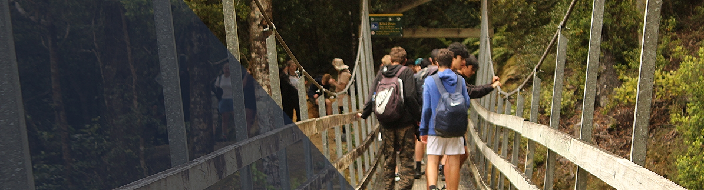
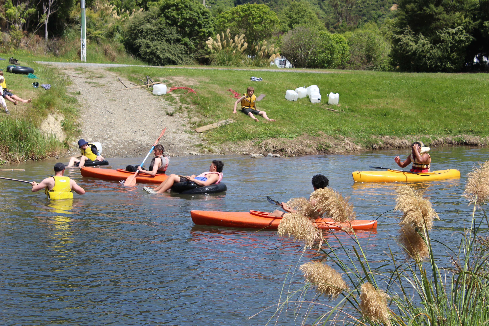

WAINUIOMATA
CAMP
TAWA COLLEGE
EOTC HUB


Wainuiomata Camp
As part of the Year 10 programme, students will have the opportunity to go on a two day camp at Camp Wainui.
During Camp, theyll learn key survival skills, like how to start a fire, build a bivvy etc.
Camp activities will be split over two days, one where theyll learn some survival skills and other skills around camp, the other, a walk
through Orongorongo Valley Bush, where they'll learn about local flora along the way amongst other skills.

MEETING TIMES
+ LOCATION
Students will be expected to be out the front of the school hall by 8:30am. Look for your form class when you arrive. Form classes will be grouped together around the perimeter of the car park here.
Students will congregate with their form classes, and after taking the roll, students will take a bus to Camp Wainui.

KEY DATES AND INFO
Students will need to have their own day pack/backpack with lunch, water bottle, sun hat, a warm jumper/thermal and rain jacket.
In addition they will have one overnight bag, with the gear listed below, and a tent if you are providing one.
The day pack must be separate from the overnight bag.
Please wear appropriate sports clothing with lace up sports shoes with good grip. No denim please.
Bring your own medication if required.
Students will be taken straight to camp Wainui where they will first construct a tent with their friends and put their overnight bag inside.
We have a large camping area at the back of the camp as well as the use of the hall and kitchen and toilets in the huts.
There are a few showers available but we would strongly discourage the use of the showers where possible as it takes a while for 260 people to shower and we are only away for one night.
GEAR LIST FOR CAMP:
In your day pack you should have:
lunch, water bottle, sun hat, sunscreen, a warm jumper/thermal and rain jacket. Any personal medication. Please label your day pack with your name and form class
In your overnight bag you should have:
Pyjamas, torch, sleeping bag, a full change of warm clothes, warm hat, small towel, togs if you wish to go in the lagoon for raft building.
Toothbrush and toothpaste.
Your packed lunch for the second day, roll mat or inflatable mattress (highly recommended but you will cope without one).
Any medication / sanitary items you may require.
Please name your bag clearly with your name and form class.
Optional items: pillow case (that you can stuff with clothes to use as a pillow), snacks for night time, a sports ball or playing cards etc for evening entertainment, insect repellent, slides or jandals for the evening.
Please leave speakers for music at home.
Tent/sleeping bags - if your family can provide a tent and/or spare sleeping bags, please label it clearly with your name and form class.
Parents - I would advise you to check how many tent pegs etc there are so that your son or daughter gets them all back in.
DAY 1
From here students will rotate through three activities at the camp, stopping for lunch between activities.
The activities here are:
• Raft building, which also includes how to fit lifejackets correctly and how to use throw ropes
• Emergency bivvy making
• Search and rescue skills and team challenges
There will be some relaxing time before dinner in the hall.
Dinner will be chilli mince and pasta (veg option available) with grated cheese and bread rolls with tinned fruit and ice cream for dessert.
In the evening we will play some camp games before everyone is sent back to their own tents for lights out at around 9.30pm.
DAY 2
We will wake nice and early and have a breakfast of cereals, toast and spreads.
Tents will be packed down and overnight bags packed. These will be left in a pile ready for the buses to pick them up in the afternoon.
Students will take their day pack with their second lunch and a water bottle, rain jacket and warm top/hat and board the bus to go 7kms down the road to the Catchpool carpark in the Remutaka Valley Park.
From here he will walk the Orongorongo track in and out of the valley (5.2km each way). Please note, there is a track detour right
at the end of the track due to a potential slip - we will be taking the detour that DOC has provided.
On the way Students will learn some map reading skills and about local flora and fauna.
Once in the valley, students will have lunch and also:
• Learn how to build their own hobo stoves for cooking in the bush.
• If the river is at its usual height of up to calf depth and not fast flowing, we will learn about river crossings. If there has been more rainfall than usual and the river is deeper or more fast flowing, this will be cancelled.
Then we will head back along the track to the car park where a private bus will pick us up and transport us back to school for around 3.30pm.
Reminders:
There is very limited cell phone coverage at camp. If you need to contact your child in an emergency and you cannot reach them via their mobile phone, please contact
the school during school hours or Camp Wainui after hours on (04) 564 5305.
There are not an abundance of powerpoints for students to charge their phones whilst away. I would advise them to either have a power bank or even better, turn their phone
to aeroplane mode whilst at camp to preserve battery and then turn it back on when they arrive back at school if they
need to contact you for a lift home etc. They should not be on their devices whilst away.
In the permission slip caregivers agreed that they would discuss with their child the rules of camp.
These include no alcohol, vaping, smoking, drugs and following the rules at all times.
If students are found to break these rules then you will be called to come and pick them up and there may be further consequences at school.
Once it is 'lights out' in the evening all students must stay in their own tents.
If you have not yet paid, please do so immediately. If payment is a problem please let me know.
The total cost for the four days is $80.
If you have a personalised programme due to injuries etc, please contact the school office and they will advise you on how much you need to pay.
If you wish to pay via internet banking, please use the following:
Details are Tawa College, 123192-0011938-00. Please include 'Surname, Firstname' and 'EOTC' in the reference box.
A reminder students need to bring their own packed lunches for both days. Please ensure your son or daughter has enough food to sustain them on the 10km walk and for the activities at camp. Water bottles can be refilled from the camp taps.